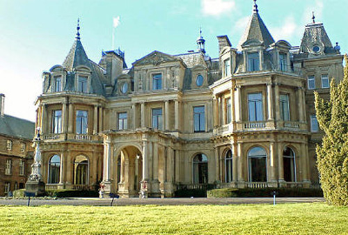
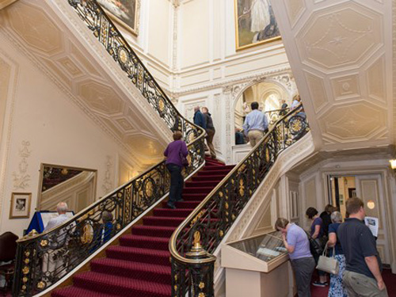
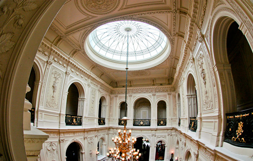
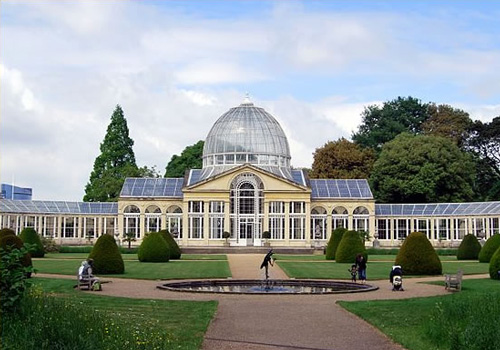
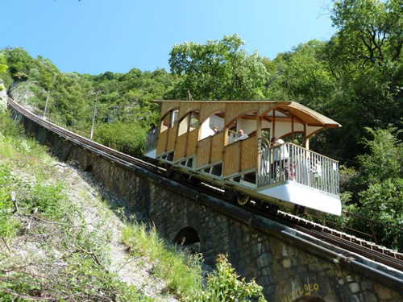
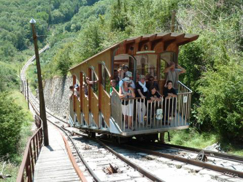
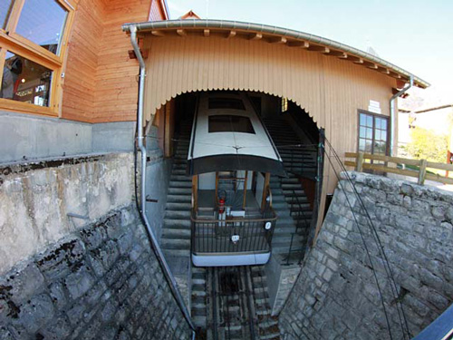
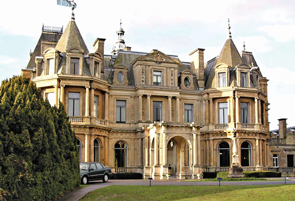
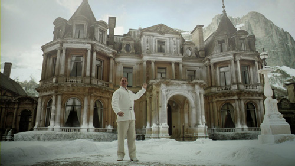

Halton House in the village of Halton, Buckinghamshire in the Chiltern Hills used for the party to catch Marrascaud stealing the Le Mesurier jewels.

The main staircase in Halton House where Poirot discusses Goethe with Harold Waring.

The upper floor with alcoves where Lucinda Le Mesurier acts as bait by wearing the famous jewels.

The Conservatory at Syon House where Ted Williams drives Poirot. (Syon House was also used in 'The Big Four').

The Funiculaire Saint-Hilare du Touvet links Montfort (on the road between Grenoble and Chambéry) with the village of Saint-Hilaire du Touvet, located on the Plateau des Petites Roches 600 metres (1,969 ft) above.

The divide on the Funicular where Poirot (travelling up) catches sight of Countess Rossakoff (travelling down). In the book, the setting was on an escalator on the London Underground.

Until the funicular was built, the village of Saint-Hilaire du Touvet was accessible only on foot. The construction of the funicular was started in 1920 and it was opened in 1924, principally to serve several sanatoria built to house tuberculosis patients.

Halton House was built for Alfred de Rothschild between 1880 and 1883. It is currently used as the main officers' mess for RAF Halton.

With suitable CGI effects Halton House is converted into the 'Hotel Olympos'.